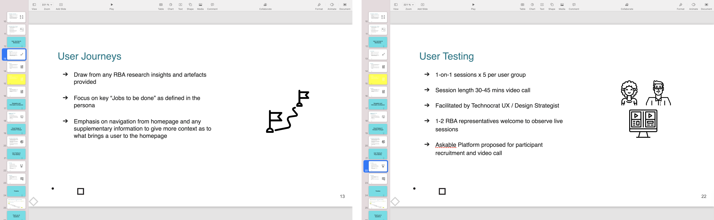
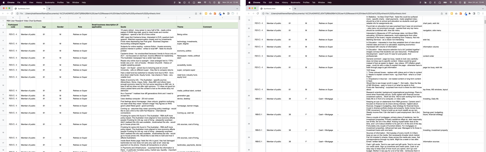
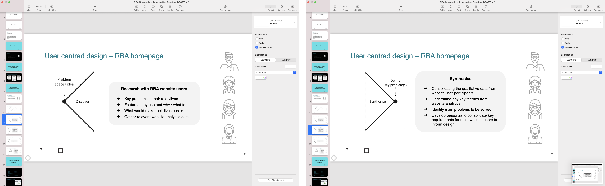
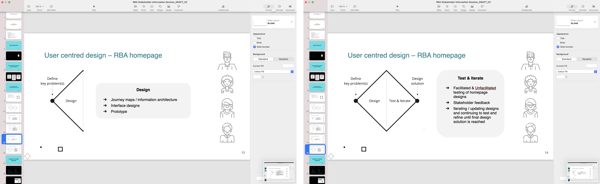
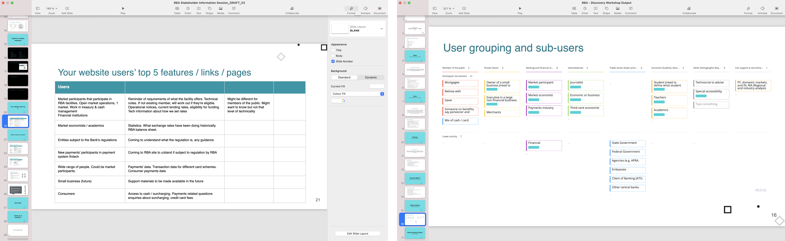
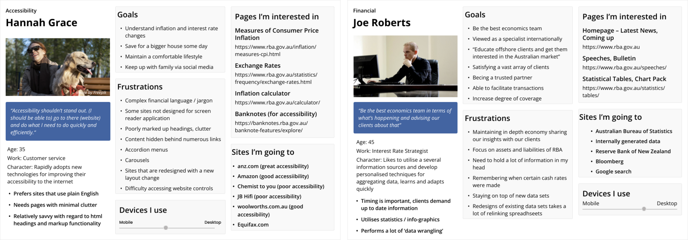
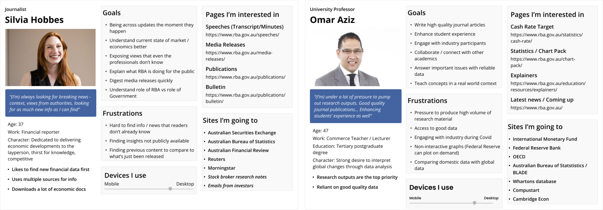
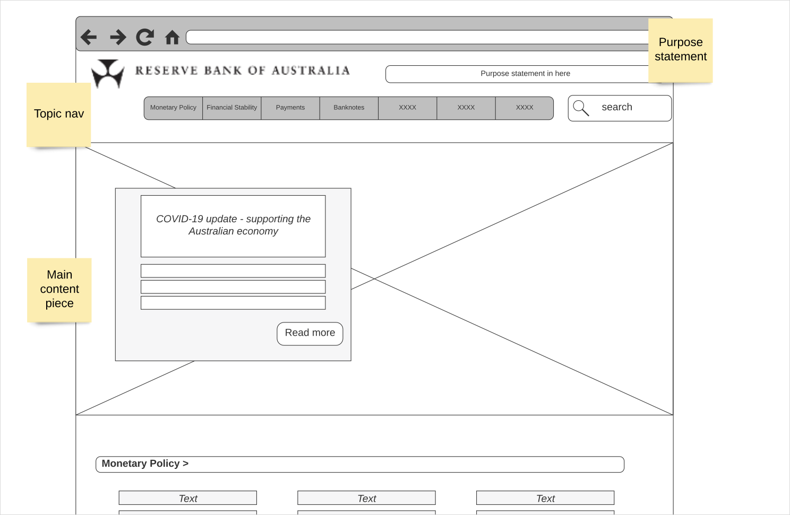
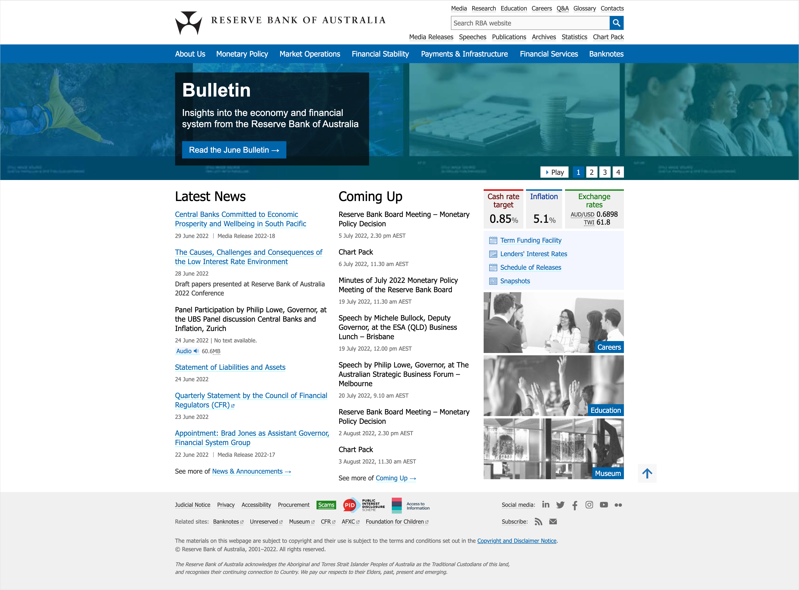
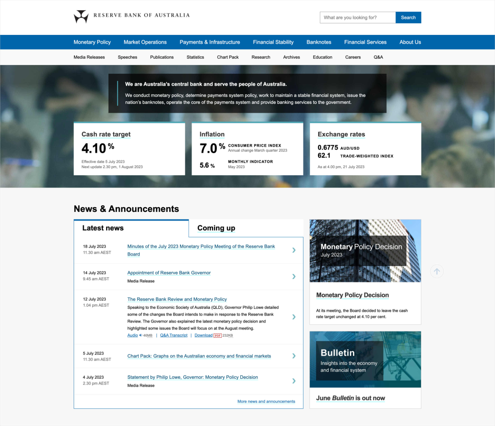

My involvement in the redesign process was instrumental in comprehending the needs of the Bank's community and their views on the existing homepage. This comprehension played a critical role in ensuring that the new homepage would effectively cater to the requirements of its diverse user base.From these insights we were able to generate draft homepage designs, which were tested and further refined to enhance the IA strategy for the homepage's revamp.
www.rba.gov.au
Presenation from stakeholder kick-off workshop
 Presenation from stakeholder kick-off workshop
Presenation from stakeholder kick-off workshop
Redesigned homepage

Notes from user research participant interviews

User centred design process presentation

User centred design process presentation

User grouping structure for recruitment weighting

Personas identified from interview findings

Personas identified from interview findings

Wirefame for homepage

Former homepage

Redesigned homepage
